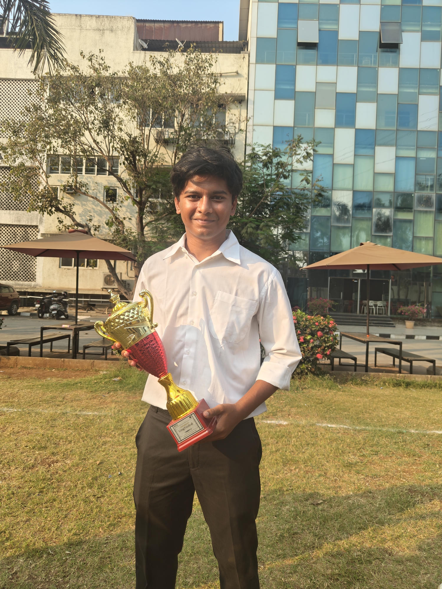
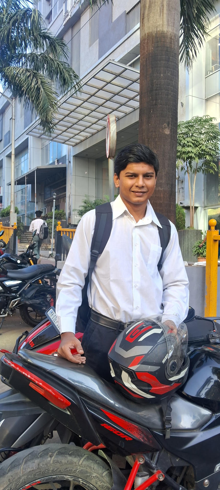
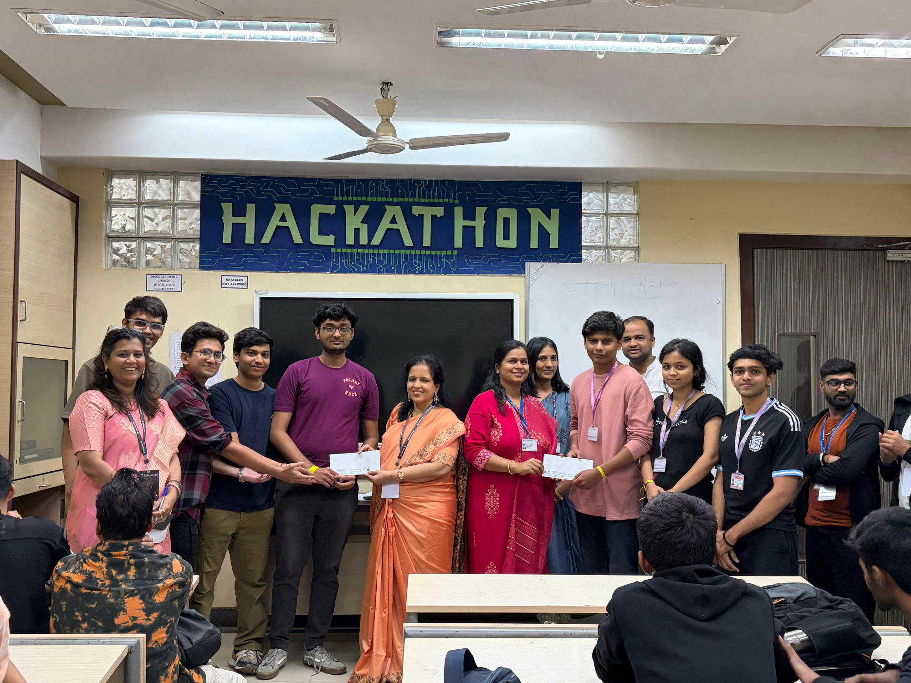
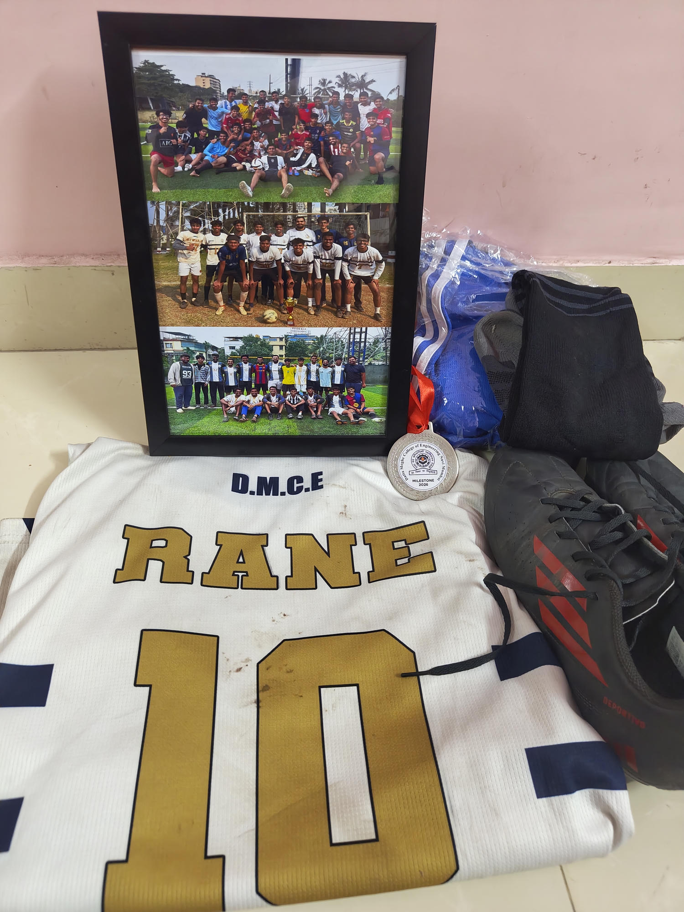

01
AI · DATA · MODELS
AI & machine learning
Use data to train models and build tools that understand text and images.
AI · MACHINE LEARNING · SOFTWARE
AI & Machine Learning Engineer
I build useful AI tools and software, from working with data and models to making apps people can use. My work includes language tools, image recognition, web apps, and cloud services.

01 / A LITTLE ABOUT ME
I’m an AI/ML engineer from Thane, Maharashtra, and a 2026 B.E. graduate in Artificial Intelligence & Data Science from Datta Meghe College of Engineering, University of Mumbai. I enjoy taking an idea from a dataset or research question all the way to an application someone can use.
My work spans machine learning, language and image tools, AI apps, cyber security, and web development. At Ross Warner HR Solutions, I helped build language tools for recruitment; my final-year project focused on finding and responding to network attacks.
Outside my technical work, football has taught me how to lead, stay disciplined, and contribute to a team. I bring that same mindset to collaborative engineering and fast-moving projects.
THE BUILD SYSTEM / 01—06
A broad set of skills for data, AI, apps, and software.
AI · DATA · MODELS
Use data to train models and build tools that understand text and images.
CODE · SCRIPT · STYLE
Write code for data, software, and web pages.
APPS · WEBSITES · APIS
Connect AI and data to websites, services, and everyday apps.
SAVE · FIND · USE DATA
Store and work with information in different kinds of databases.
CLOUD · CODE · RELEASE
Build, share, and run projects online.
ANALYZE · CHART · EXPLAIN
Find patterns and make results easy to understand.
02 / WHERE I’VE CONTRIBUTED

Built AI tools for recruitment, candidate review, and business operations across three connected products.
Explore my Ross Warner work03 / SELECTED WORK
AI/ML domain-winning navigation, real-time security research, and a space intelligence platform.

AI/ML DOMAIN WINNER · 3RD OVERALL · JAN 2026
A multimodal last-mile navigation assistant built to make hard-to-find local destinations easier to reach when map directions fall short.
Won the AI/ML domain and placed 3rd overall among 40+ teams at Techvanza ’26.
Explore RapidReach
FINAL-YEAR PROJECT · CYBERSECURITY
A real-time traffic monitor that uses packet rates and statistical checks to flag suspicious activity and help block malicious sources.
Research paper published in the International Journal of Creative Research Thoughts (IJCRT).
View research paper Explore DDoS systemAI/ML HACKATHON FINALIST · CODE-A-THON 2.0
A real-time space operating system and installable PWA that brings together 15+ live scientific data streams, satellite and sensor telemetry, interactive 3D visualizations, and generative AI for astronomy, Earth observation, and STEM learning.
Explore Beyond Horizon04 / EDUCATION
BACHELOR OF ENGINEERING · MAY 2026
Datta Meghe College of Engineering · University of Mumbai
HIGHER SECONDARY · 2022
People’s Education Society, Thane
SECONDARY · 2020
New Horizon Public School, Navi Mumbai
05 / LET’S CONNECT
I’m open to conversations about AI/ML engineering, applied research, and building useful products.